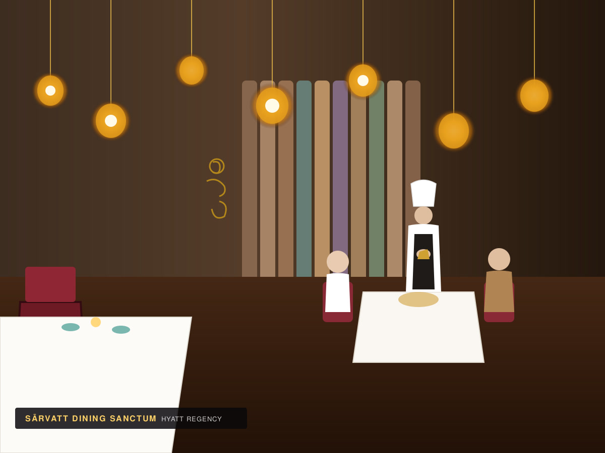

Curiosity before certainty
We ask better questions before we draw prettier answers.
Studio / North 03
We're a small independent creative studio built around senior thinking, strong craft, and the belief that good work should change the way people see the thing.
01 / 04
Why North/03
We work with founders, operators, culture-led teams, and growing companies at the moments when the old version of the brand no longer fits the ambition.
Sometimes that means a complete identity. Sometimes it means a website, a campaign, or a new way to tell the story. The common thread is making the idea clearer, sharper, and harder to forget.
02 / 04
Studio principles
We ask better questions before we draw prettier answers.
Distinctive ideas need systems strong enough to survive real use.
The final deliverable should help your team move, not create more work.
Clarity is a form of taste. So is knowing when to stop.

We build the logic once, then let it travel: from the deck to the website, from the package to the campaign, from the first launch post to the last sign on the wall.
See our services ↗